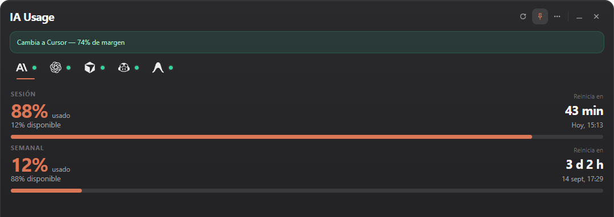

Control total
Tus cuotas y límites en un mismo lugar.
AI quota monitor
Todos tus límites de IA. Una sola experiencia.
Monitoriza cuotas, reinicios, disponibilidad y uso de las herramientas de IA que realmente utilizas desde Windows, Android y VS Code.
Gratis · Open source · Windows 10/11 · Android · VS Code

Tus cuotas y límites en un mismo lugar.
Anticípate a límites, resets y agotamientos.
Tus credenciales permanecen en tus dispositivos.
IA Usage Desktop es el centro principal. Android y VS Code mantienen tus límites visibles mientras trabajas o estás lejos del escritorio.
App de bandeja con panel de cuotas, recomendaciones, alertas, modo compacto y vista detallada. Windows 10/11.

App companion vinculada de forma segura al PC, con dashboard, alertas, actualizaciones y widgets para consultar las cuotas desde la pantalla de inicio.

Tus límites directamente en la barra de estado del editor. Compatible con VS Code y forks compatibles como Cursor, Windsurf y Antigravity.
Un solo producto, tres superficies: escritorio, editor y teléfono.

Activa solo los que usas. IA Usage nunca desactiva un proveedor por ti.
IA Usage reutiliza sesiones y credenciales que ya existen localmente cuando el proveedor lo permite, en vez de pedirte que vuelvas a autenticarte.
Windows, Android y VS Code se sirven desde la última release publicada.